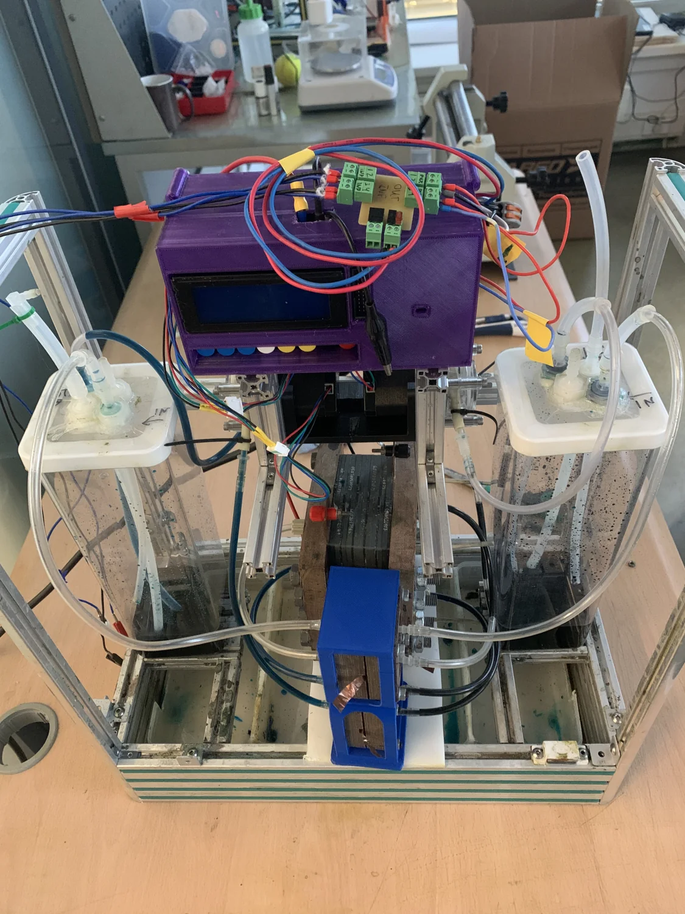
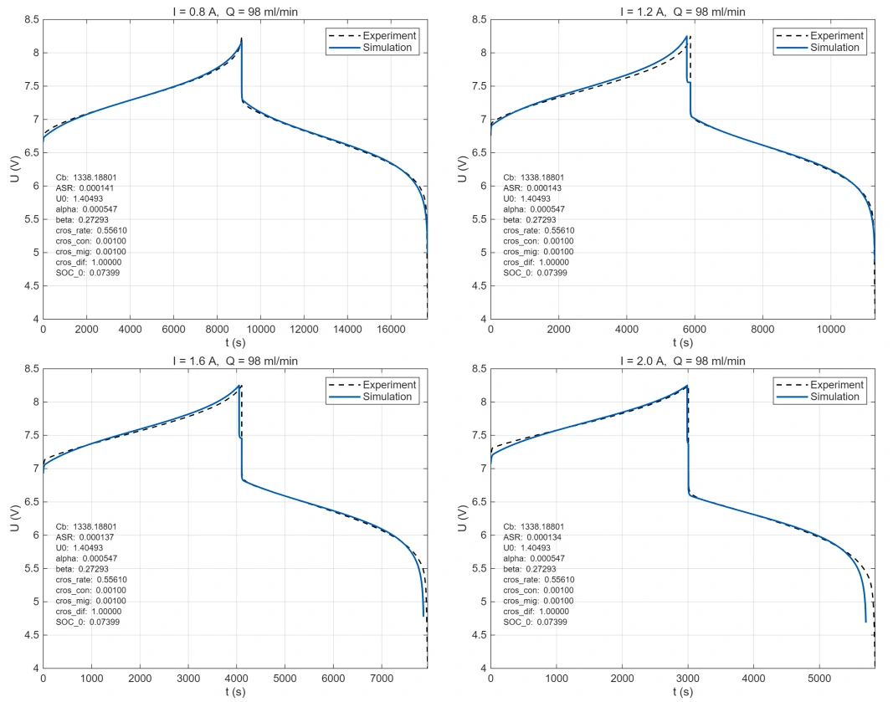
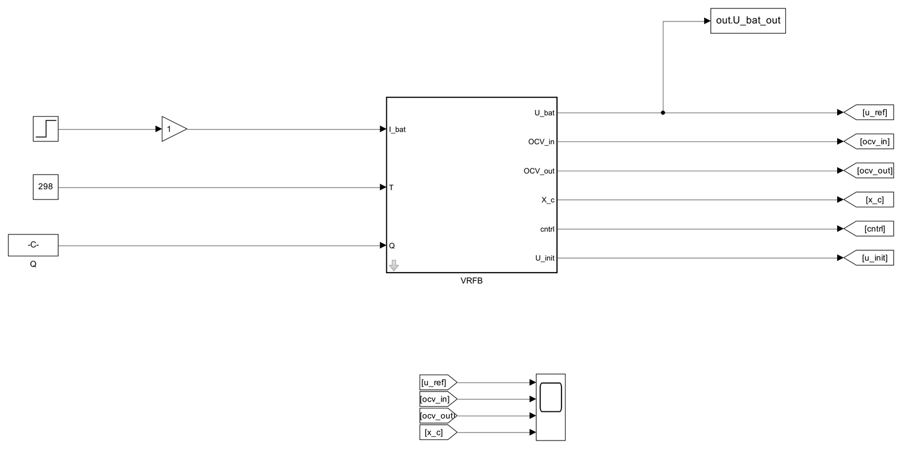
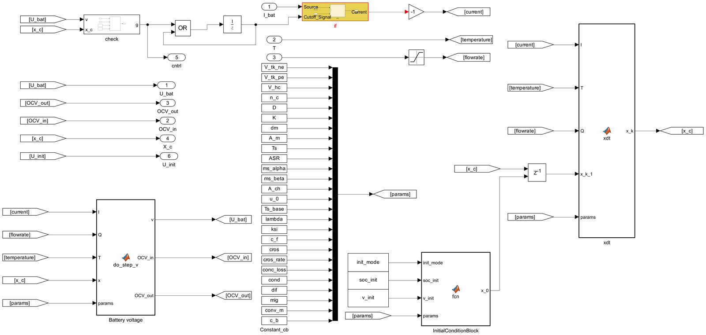
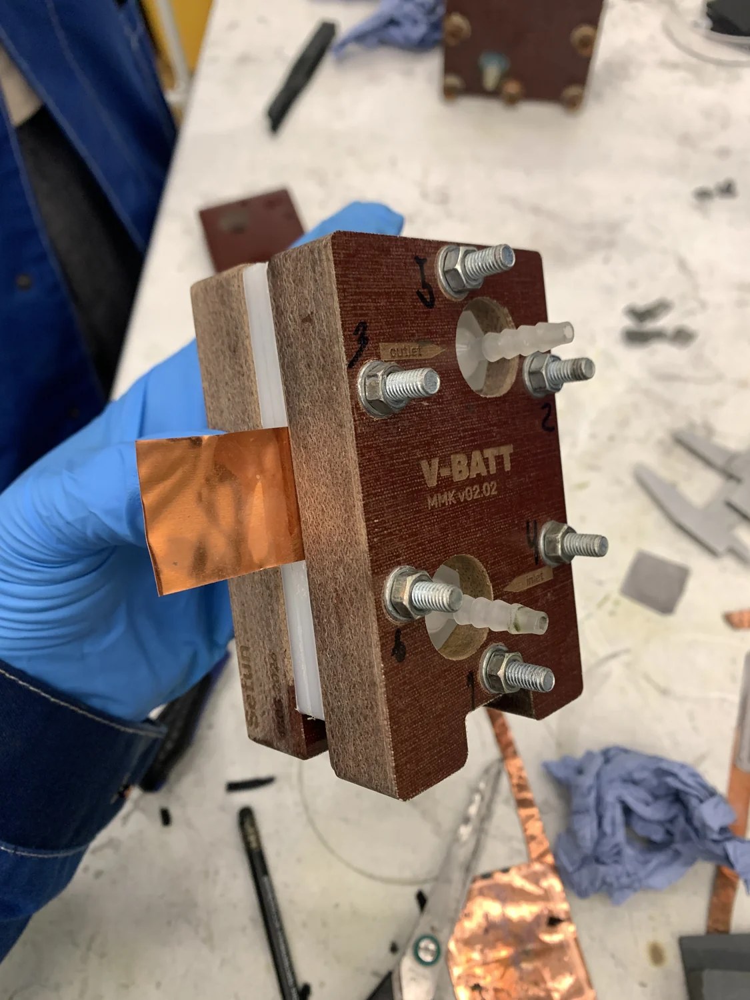

Research / MSc thesis
Understanding the battery
behind the voltage.
I work on digital twins and parameter identification for vanadium redox flow batteries. The question is not just whether a model fits, but what that fit tells us about the physical battery.
Conceptual schematic; animation illustrates circulation and electron flow, not measured operation.

01 / The digital twin
A model that meets
the measurements.
In the first year of my MSc, I built a zero-dimensional flow-battery model in Simulink using the laboratory’s established physics. The model tracks electrolyte concentrations and stack voltage, can start from state of charge or measured voltage, and includes charge and discharge protection.
I fitted it to six polarisation curves and four laboratory charge–discharge cycles using a two-stage identification method adapted from the lab’s published work. A shared physical parameter set reproduced the four cycles with a mean voltage RMSE of 0.065 V in Simulink; area-specific resistance was retuned for each current. As an independent check, the fitted formal potential lands within 4 mV of the directly measured open-circuit voltage, and the fitted initial state of charge matches a Nernst estimate.
The next question was identifiability. Repeating the fit from different starting points showed that a good voltage fit does not uniquely determine every physical parameter. Formal potential, resistance, and concentration can compensate for one another.
Research repositoryScope: one five-cell stack and one experimental campaign. The voltage error describes the fitted laboratory cycles; it is not a general battery-accuracy guarantee.

Model structure




02 / Cell design
From CAD
to the cell.
Alongside the modelling work, I use Autodesk Fusion for 3D CAD and assembly modelling of our vanadium redox flow-battery cells.
The Fusion assembly and the corresponding physical cell show the link between CAD and the laboratory hardware: layered cell components, end plates, fasteners, and electrolyte connections.



03 / Current direction
From fitting
to diagnostics.
Which part of the battery is changing?
My second-year work moves toward diagnostics: distinguishing changes in the membrane, electrode, and electrolyte from cycling measurements, while keeping the model parameters physically meaningful.
I am comparing conventional least-squares identification with physics-constrained neural-network approaches, studying how state continuity between cycles, regularisation, and starting assumptions affect inferred crossover trends.
Comparative cell experiments and deployment on affordable hardware are part of the next stage. They are ongoing objectives; the current work does not yet establish validated component-level diagnosis in a real battery.
Research notes
Where things stand.
Updated 21 October 2026
Testing the identification assumptions
Synthetic studies and a real-data demonstration compare cycle-by-cycle and state-carrying fits, alongside a physics-constrained neural approach. Work is ongoing; architecture and convergence limits remain explicit.
First-year digital-twin report
Completed the account of the Simulink model, protection logic, experimental fitting, and parameter-identifiability limits.
Comparative measurements
Developing the multi-cell experimental programme and evaluating low-cost hardware for practical identification.
Writing
Reports & work in progress.
My current writing consists of an internal research report and a course-project draft. Conference work is in preparation; these are not peer-reviewed publications.
A digital twin for a vanadium redox flow battery: Simulink model, protection logic and parameter identification on a five-cell stack. Research report.